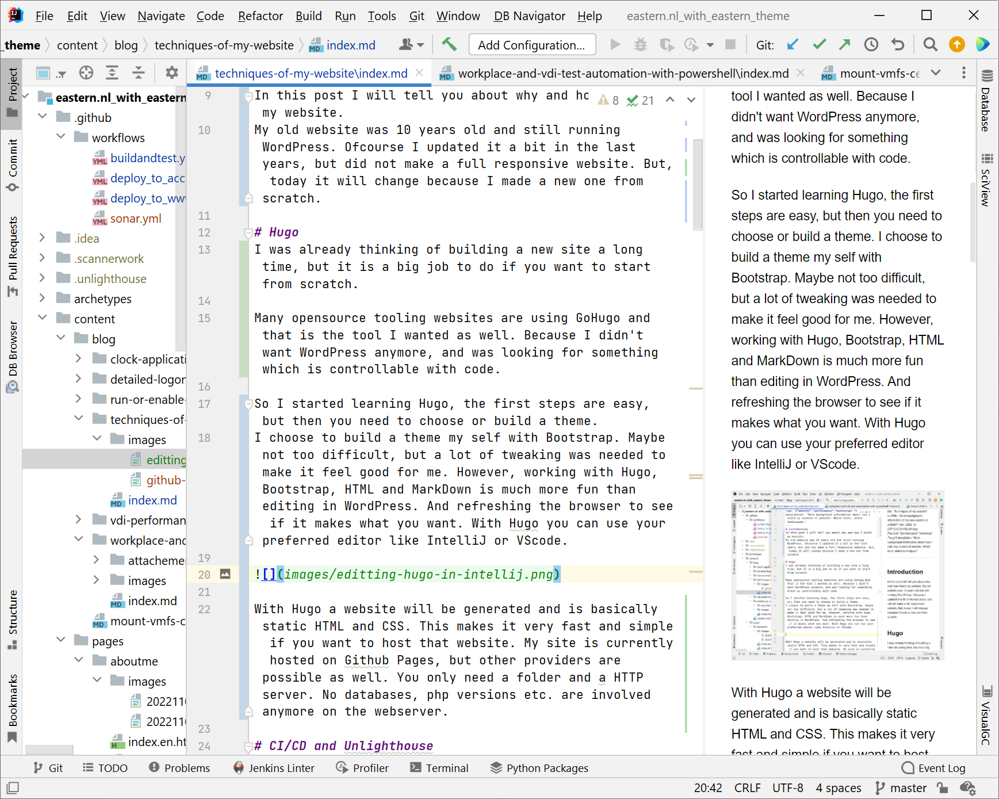
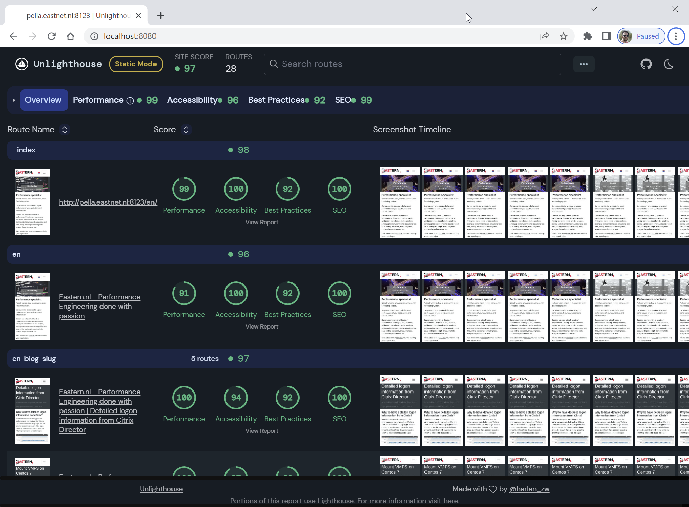
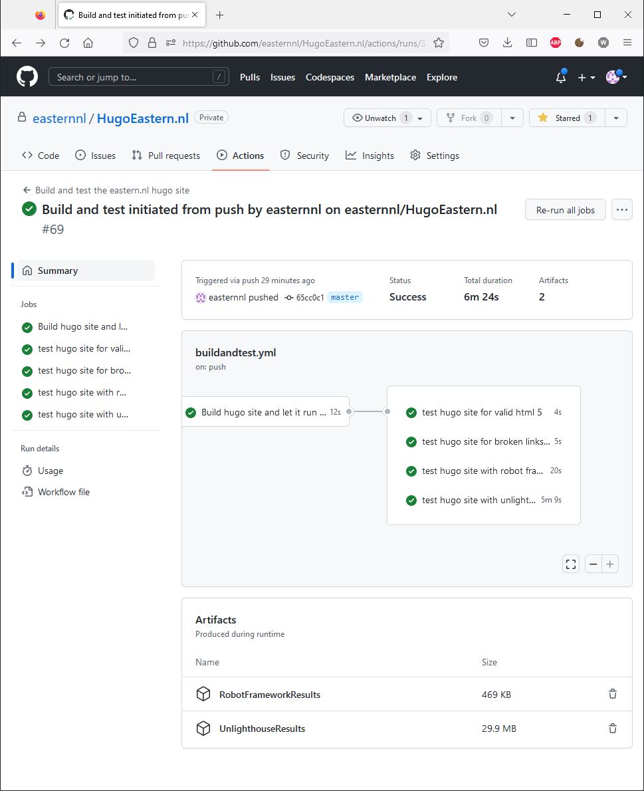

Techniques of my website
Introduction
In this post I will tell you about why and how I build my website. My previous website was already 10 years old and running WordPress. I choose for Hugo now, and made also some CI/CD integrations to get a better end result.
Hugo
I was already thinking of building a new site a long time, but it is a big job to do if you want to start from scratch.
I found that many opensource tooling websites are using GoHugo and that is the tool I wanted as well. I didn’t want WordPress anymore because of the hassle to install. And the security updates that always need to be installed.
So I started learning Hugo. Hugo is build with code. I choose to build a theme my self with Bootstrap and not pick one from the available options. Building a theme is not too difficult, but a lot of tweaking was needed to get a nice result. Working with Hugo, Bootstrap, HTML and MarkDown is much more fun than editing in WordPress. With Hugo you can use your preferred editor like IntelliJ or VScode as well.

With a commandline tool you can start the Hugo server on your development computer. If you then open the browser to view the final result, it automatically refreshes on changes when you continue with coding.
1hugo server -D
In the end a website will be generated which is basically static HTML and CSS. This makes it very fast and simple. If you are going to host that site, it gives you a lot of options because you only need a HTTP server. No databases, php versions etc. are involved anymore. My site is currently hosted on Github Pages, but almost all providers are possible as well.
CI/CD and Unlighthouse
Even with Hugo you can setup a complete CI/CD pipeline to deploy your website full automatic. I have done that as well and integrated some tooling like:
- A HTML validator to check for proper HTML on all pages (https://pypi.org/project/html5validator/)
- A link checker if I made a mistake (https://github.com/JustinBeckwith/linkinator)
- Google Lighthouse for speed checking - with Unlighthouse. (https://unlighthouse.dev/)
- Robot Frame work to check if the pages have the content I really like (yes, you can make a type in Hugo which will break your website) (https://robotframework.org/)
Most of this tools are quitte common, even Lighthouse. But I found this tool fascinating: Unlighthouse. Basically it is a wrapper around Lighthouse, but a good one. First it indexes the complete site and later it will make a report for all pages together. If you need more detail, it is possible to drilldown to the original Lighthouse report. It looks as follow:

Visit this site for more information about Unlighthouse, and this for a public demo of the Unlighthouse report:
I have setup a Github Actions pipeline to run all the tests and validations. It looks as follows:

The YAML files are also included in this blog post.
Verdict
Working with Hugo is more fun than working with Wordpress. With Hugo you have the complete control of the website. If a static website meets your requirements, then it is good to consider using Hugo.
Why I choose for Hugo?
- All source code in Git
- Complete CI/CD possible with independend DTAP environment
- Runs on Windows, Linux and Mac
- Use your favorite editor like IntelliJ or VScode
- Easy and cheap hosting, no database, php e.g. needed
- Write blog posts in Mark Down
- Designed for performance
Any comment? Please drop me a message.
Source codes of Github Actions
The code for test & validation Github Action
1name: Build and test the eastern.nl hugo site
2run-name: Build and test initiated from ${{ github.event_name }} by ${{ github.actor }} on ${{ github.repository }}
3on:
4 workflow_dispatch:
5 push:
6env:
7 PORTNUMBER: 8123
8 CONTAINERNAME: HugoEastern.nl
9jobs:
10 Build:
11 runs-on: self-hosted
12 name: Build hugo site and let it run in docker
13 defaults:
14 run:
15 working-directory: ./buildandtest
16 steps:
17 - uses: actions/checkout@v3
18 with:
19 path: ./buildandtest
20 - name: Remove old docker container $CONTAINERNAME
21 run: |
22 docker stop $CONTAINERNAME || true
23 docker rm $CONTAINERNAME || true
24 - name: Setup Hugo
25 uses: peaceiris/actions-hugo@v2
26 with:
27 hugo-version: latest
28 - name: Info running on
29 run: echo "Running on `hostname -f`"
30 - name: Info repo contents
31 run: ls
32 - name: Build site with Hugo
33 run: hugo --baseURL=http://`hostname -f`:$PORTNUMBER/ --destination=public
34 - name: Copy 404.html
35 run: cp public/en/404.html public/404.html
36 - name: Serve site with docker
37 run: docker run -d --name $CONTAINERNAME -p $PORTNUMBER:80 -v ${PWD}/public:/usr/local/apache2/htdocs:ro httpd:2.4
38 Test-HTML-Validation:
39 runs-on: self-hosted
40 needs: Build
41 name: test hugo site for valid html 5
42 defaults:
43 run:
44 working-directory: ./buildandtest
45 steps:
46 - name: install html5validator
47 run: pip install html5validator
48 - name: validate html codes
49 run: ~/.local/bin/html5validator --root ./public/ --ignore 'Bad value "100%" for attribute "width" on element "img"'
50 #run: ~/.local/bin/html5validator --show-warnings --root ./public/
51 Test-Broken-Links-Validation-Linkinator:
52 runs-on: self-hosted
53 needs: Build
54 name: test hugo site for broken links with linkinator
55 defaults:
56 run:
57 working-directory: ./buildandtest
58 steps:
59 - name: install linkinator
60 # used node > v14
61 run: npm install linkinator
62 - name: check broken links
63 run: ~/node_modules/.bin/linkinator http://`hostname -f`:$PORTNUMBER/ -r --verbosity error -s http://nl.linkedin.com/in/erikvanoost
64 RobotFrameworkTest:
65 runs-on: self-hosted
66 needs: Build
67 name: test hugo site with robot framework
68 defaults:
69 run:
70 working-directory: ./buildandtest/robot_tests/
71 steps:
72 - name: Install Robot Framework
73 run: pip install robotframework robotframework-Selenium2Library robotframework-SeleniumLibrary
74
75 - name: Run Robot Tests
76 run: ~/.local/bin/robot .
77
78 - uses: actions/upload-artifact@v3
79 with:
80 name: RobotFrameworkResults
81 path: |
82 ./buildandtest/robot_tests/report.html
83 ./buildandtest/robot_tests/log.html
84 ./buildandtest/robot_tests/output.xml
85
86 Unlighthouse:
87 runs-on: self-hosted
88 needs: build
89 name: test hugo site with unlighthouse for performance
90 defaults:
91 run:
92 working-directory: ./buildandtest
93 steps:
94 - name: Install Dependencies
95 run: npm add @unlighthouse/cli puppeteer
96
97 - name: Unlighthouse assertions and client
98 run: ~/node_modules/.bin/unlighthouse-ci --site http://`hostname -f`:$PORTNUMBER/ --budget 90 --build-static
99
100 - uses: actions/upload-artifact@v3
101 with:
102 name: UnlighthouseResults
103 path: |
104 ./buildandtest/.unlighthouse
And also the code to deploy the site to Github Pages
1name: Deploy site to www.eastern.nl
2run-name: Deploy to www.eastern.nl initiated from ${{ github.event_name }} by ${{ github.actor }} on ${{ github.repository }}
3on:
4 workflow_dispatch:
5env:
6 URL: https://www.eastern.nl/
7 NAME: wwweasternnl
8 SSH_AUTH_SOCK: /tmp/ssh_agent.sock
9jobs:
10 Build:
11 runs-on: self-hosted
12 name: Build and deploy hugo site
13 steps:
14 - uses: actions/checkout@v3
15 - name: Setup Hugo
16 uses: peaceiris/actions-hugo@v2
17 with:
18 hugo-version: latest
19 - name: Read SSH secret
20 run: |
21 echo "${{ secrets.DEPLOYKEYWWWEASTERNNL }}" > ~/DEPLOYKEYWWWEASTERNNL
22 chmod 600 ~/DEPLOYKEYWWWEASTERNNL
23 - name: StrictHostKeyChecking=accept-new
24 run: git config --global core.sshCommand 'ssh -o StrictHostKeyChecking=accept-new'
25 - name: Checkout public site
26 run: ssh-agent bash -c 'ssh-add ~/DEPLOYKEYWWWEASTERNNL ; git clone git@github.com:easternnl/www.eastern.nl site'
27 - name: Info repo contents
28 run: ls
29 - name: Build site with Hugo
30 run: hugo --baseURL=$URL --destination=site
31 - name: Copy 404.html
32 run: |
33 cp site/en/404.html site/404.html
34 - name: Add all changes
35 run: |
36 cd site
37 git config user.name "github-actions@eastern.nl"
38 git config user.email "github-actions@eastern.nl"
39 git status
40 git add -A
41 git diff-index --quiet HEAD || git commit -m "Release on `date +'%Y-%m-%d'` by $GITHUB_ACTOR"
42 ssh-agent bash -c 'ssh-add ~/DEPLOYKEYWWWEASTERNNL ; git push'
43 cd ..
44 - name: Delete SSH key
45 run: rm ~/DEPLOYKEYWWWEASTERNNL